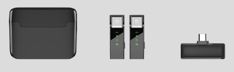
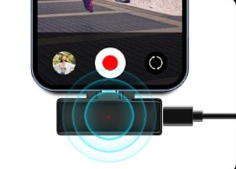
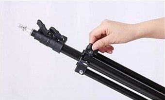
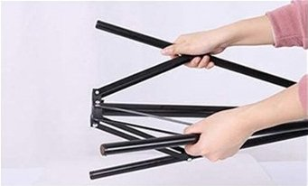
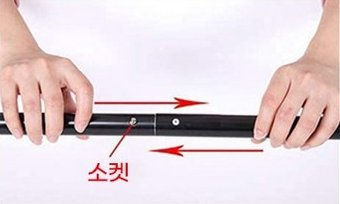
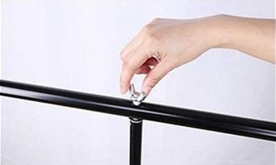
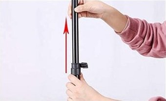
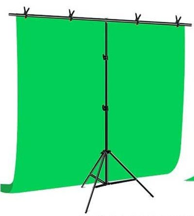

줌 강의는 평소처럼 진행하며,
VOD용 영상은 휴대폰으로 별도 촬영해 주시기 바랍니다.
휴대폰에 조명·그린스크린·핀마이크를 더한 세팅 촬영으로 진행합니다. 휴대폰 외 촬영 장비는 본사에서 대여해 드립니다.
대여 일정은 담당자(양유민PD)가 안내드립니다. 세팅이 어려운 사정이 있으시면 담당자(양유민PD)와 협의 부탁드립니다.
대여해 드리는 장비는 아래 순서대로 따라 하시면 됩니다. 어려우시면 담당자(양유민PD)에게 연락 주세요.
녹음 버튼은 따로 없습니다. 리시버를 꽂기만 하면 마이크 소리가 들어갑니다.

충전케이스를 열고 마이크와 리시버(꽂는 부품)를 꺼냅니다.

리시버를 휴대폰 아래 충전 구멍에 꽂고, 리시버 옆 구멍에 충전기 줄을 꽂습니다. 이것으로 연결은 끝입니다.
마이크를 가슴 가운데 옷에 집게로 꽂습니다. 머리카락이나 옷이 닿지 않게 해 주세요.
촬영 중 휴대폰이 꺼지지 않도록, 리시버를 꽂은 상태에서 꼭 충전기를 연결해 주세요. 리시버 옆의 작은 구멍에 휴대폰 충전기를 꽂으면 충전하면서 촬영할 수 있습니다.
노트북으로 소리를 받을 때는 리시버를 노트북 옆 구멍에 꽂습니다. 구멍 모양이 맞지 않으면 함께 드리는 작은 연결 부품(어댑터)을 끼워 꽂고, 줌에서 마이크를 리시버로 골라 주세요.
강연자 뒤 1m 정도 떨어진 곳에 세웁니다. 두 사람이 함께 하시면 더 쉽습니다.

세워 두는 긴 거치대의 아래쪽 레버를 풉니다.

거치대 다리 세 개를 벌려 바닥에 세웁니다.

가로봉 2개를 가운데 연결 부품(소켓)에 끼워 하나로 만듭니다.

가로봉을 거치대 맨 위에 올리고, 작은 나사를 돌려 조입니다.

거치대를 위로 쭉 뽑아 높이를 맞춥니다. 앉았을 때 머리보다 충분히 높게 해 주세요.

초록 천을 가로봉에 걸고 집게 4개로 집어 고정합니다. 천에 주름이 없도록 아래로 당겨 펴 주세요.
휴대폰은 강연자 왼쪽 앞에서 비스듬히 배치합니다. 뒤쪽에는 그린스크린을 설치합니다. 강의는 줌 화면을 보며 편하게 진행해 주시기 바랍니다.
휴대폰 원본 = 아이폰 MOV · 갤럭시 MP4 파일 그대로 전달 부탁드립니다. 변환하거나 용량을 줄이지 말아 주세요.
영상은 카카오톡으로 전송하지 말아 주세요. 화질이 저하되므로 업로드 링크를 이용해 주시기 바랍니다.
D-7 리허설 전까지 준비를 마쳐 주시기 바랍니다. 체크한 내용은 이 기기에 저장됩니다.
강의 당일 30분 전, 항목별로 확인 부탁드립니다.
쉬는 시간에도 녹화는 중단하지 말아 주시고, 강의 종료 후 당일 촬영 원본을 전달 부탁드립니다.